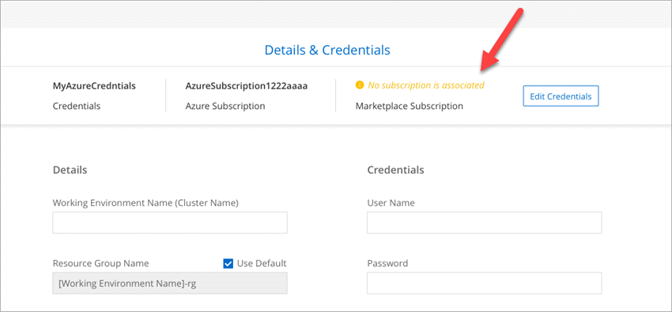

문서 변경 요청
문서 변경 요청 이 페이지 편집
이 페이지 편집 기여하는 방법 자세히 알아보기
기여하는 방법 자세히 알아보기Cloud Manager 3.8의 새로운 기능
Cloud Manager에는 일반적으로 새로운 기능, 개선 사항 및 버그 수정을 제공하기 위해 매월 새로운 버전이 출시됩니다.

|
이전 릴리스를 찾으십니까?"3.7의 새로운 기능" "3.6의 새로운 기능" "3.5의 새로운 기능" |
새로운 Terraform 공급자(2020년 10월 19일)
DevOps 팀에서 Cloud Manager를 사용하여 Cloud Volumes ONTAP를 자동화하고 인프라와 코드로 통합하는 새로운 Terraform 공급자를 개발했습니다.
Cloud Manager 3.8.9 업데이트(2020년 10월 18일)
활용할 수 있습니다 "Spot’s Cloud Analyzer를 참조하십시오"이제 Cloud Manager를 사용하여 클라우드 컴퓨팅 지출에 대한 상위 수준의 비용 분석을 수행하고 잠재적인 비용 절감을 파악할 수 있습니다. 이 정보는 Cloud Manager의 * Compute * 서비스에서 확인할 수 있습니다. "자세한 정보".

Cloud Manager 3.8.9 업데이트(2020년 10월 13일)
Cloud Tiering의 두 가지 업데이트가 릴리스되었습니다.
-
Cloud Manager에서 Cloud Tiering의 라이센스를 사용할 수 있습니다.
사용한 만큼만 지불하는 가입형, _FabricPool_라는 ONTAP 계층화 라이센스 또는 두 가지를 결합한 방법으로 데이터를 사내 ONTAP 클러스터에서 클라우드로 계층화하는 데 필요한 비용을 지불하면 됩니다.
-
독립 실행형 Cloud Tiering 서비스는 폐기되었습니다. 이제 Cloud Manager에서 Cloud Tiering에 직접 액세스해야 합니다. 모든 기능은 동일합니다.
Cloud Manager 3.8.9(2020년 10월 4일)
클라우드 규정 준수 강화
-
Cloud Manager에서 새로운 * Cloud Compliance Viewer * 역할을 사용할 수 있습니다.
이 역할이 할당된 사용자는 준수 정보만 보고 액세스 권한이 있는 작업 영역에 대한 보고서를 생성할 수 있습니다. Cloud Compliance 설정을 관리할 수 없으며 다른 Cloud Manager 기능 및 서비스에 액세스할 수 없습니다. 이는 법률 팀이 클라우드 규정 준수 검사 결과를 모니터링할 수 있도록 하는 완벽한 역할일 수 있습니다. 을 참조하십시오 "사용자 역할" 를 참조하십시오.
-
MongoDB 및 PostgreSQL 데이터베이스 스키마를 검사하는 기능이 추가되었습니다. 을 참조하십시오 "데이터베이스 스키마를 검색하는 중입니다" 를 참조하십시오.
-
10월 7일부터 클라우드 규정 준수 가격이 변경됩니다.
Cloud Manager 작업 공간에서 Cloud Compliance에서 스캔하는 첫 1TB의 데이터는 무료입니다. 여기에는 Cloud Volumes ONTAP 볼륨, Azure NetApp Files 볼륨, Amazon S3 버킷 및 데이터베이스 스키마의 데이터가 포함됩니다. 1TB에 도달한 후 추가 데이터를 검색하려면 가입이 필요합니다. 을 참조하십시오 "가격" 를 참조하십시오.
Cloud Volumes Service for AWS 개선사항
새 볼륨을 생성할 때 다른 볼륨의 기존 스냅샷 복사본을 기반으로 해당 볼륨을 설정할 수 있습니다.
Cloud Sync 통합
NetApp의 Cloud Sync 서비스는 이제 클라우드 관리자 내에서 사용할 수 있습니다. Cloud Sync은 간단하고 안전하며 자동화된 방법으로 모든 소스 타겟의, 클라우드 또는 사내로 데이터를 마이그레이션할 수 있습니다. "자세한 정보".
계정 관리 기능이 향상되었습니다
계정 관리 방법이 더 추가되었습니다.
-
이제 계정 리소스에 대한 개요를 확인할 수 있습니다.
계정에서 사용자, 작업 영역, 커넥터 및 구독의 수를 빠르게 볼 수 있습니다.
-
계정 이름을 변경할 수 있습니다.
-
계정 ID, 작업 영역 ID 또는 커넥터 ID를 복사할 수 있습니다.
이러한 ID를 복사하면 계획 중인 자동화 기능에 도움이 됩니다.
-
SaaS 플랫폼 사용을 비활성화할 수 있습니다.
회사의 보안 정책을 준수할 필요가 없는 한 SaaS 플랫폼을 사용하지 않는 것이 좋습니다. SaaS 플랫폼을 사용하지 않도록 설정하면 NetApp의 통합 클라우드 서비스를 사용할 수 없게 됩니다. "자세한 정보".

정부 지역 변경
AWS GovCloud 지역, Azure Gov 지역 또는 Azure DoD 지역에 커넥터를 배포하는 경우, 이제 Connector의 호스트 IP 주소를 통해서만 Cloud Manager에 액세스할 수 있습니다. 전체 계정에 대해 SaaS 플랫폼에 대한 액세스가 비활성화되었습니다.
즉, 최종 사용자 내부 VPC/VNET에 액세스할 수 있는 권한이 있는 사용자만 Cloud Manager의 UI 또는 API를 사용할 수 있습니다.
Cloud Manager 3.8.8 업데이트(2020년 9월 22일)
Kubernetes 서비스를 개선하여 더욱 손쉽게 사용할 수 있도록 했으며 추가 기능을 제공했습니다.
-
클라우드 공급자의 관리되는 Kubernetes 서비스에서 실행 중인 Kubernetes 클러스터를 더 쉽게 검색할 수 있도록 했습니다.
간단히 * 클러스터 검색 * 을 클릭하면 Cloud Manager가 이미 제공한 클라우드 공급자 권한을 사용하여 관리 클러스터를 검색합니다.
-
이제 상태, 볼륨 수, 스토리지 클래스 등을 포함하여 검색된 Kubernetes 클러스터에 대한 자세한 정보를 볼 수 있습니다.

-
클러스터와 Cloud Volumes ONTAP 간에 통신이 가능한지 확인하기 위해 리소스 및 오류 검사를 추가했습니다. 그렇지 않은 경우 알려 드리겠습니다.
Connector의 서비스 계정에는 GKE(Google Kubernetes Engine)에서 실행되는 Kubernetes 클러스터를 검색 및 관리하기 위한 다음과 같은 권한이 필요합니다.
- container.*Cloud Manager 3.8.8 업데이트(2020년 9월 10일)
Cloud Manager를 통해 글로벌 파일 캐시를 구축할 때 다음과 같은 향상된 기능을 사용할 수 있습니다.
-
이제 AWS의 Cloud Volumes ONTAP HA 쌍이 중앙 스토리지의 백엔드 스토리지 플랫폼으로 지원됩니다.
-
여러 글로벌 파일 캐시 로드 분산 설계에 핵심 인스턴스를 배포할 수 있습니다.
Cloud Manager 3.8.8(2020년 9월 9일)
Cloud Volumes Service for Google Cloud 지원
-
기존 Cloud Volumes Service for GCP 볼륨을 관리하고 새 볼륨을 생성하는 작업 환경을 추가합니다. "자세히 알아보기".
-
Linux 및 UNIX 클라이언트용 NFSv3 및 NFSv4.1 볼륨과 Windows 클라이언트용 SMB 3.x 볼륨을 생성하고 관리합니다.
-
볼륨 스냅숏을 생성, 삭제 및 복원합니다.
이제 클라우드 백업 시 사내 ONTAP 클러스터가 지원됩니다
사내 ONTAP 시스템에서 클라우드로 데이터 백업을 시작합니다. 온프레미스 작업 환경에서 Cloud로 백업을 사용하여 Azure Blob 저장소에 볼륨을 백업할 수 있습니다. "자세한 정보".
클라우드 백업 기능이 향상되었습니다
사용 편의성을 높이기 위해 사용자 인터페이스를 수정했습니다.
-
사용 가능한 백업과 함께 백업 중인 볼륨을 쉽게 볼 수 있는 볼륨 목록 페이지
-
백업 설정 페이지를 클릭하여 각 작업 환경의 백업 설정을 확인합니다
클라우드 규정 준수 강화
-
데이터베이스에서 데이터를 검색하는 기능
데이터베이스를 검사하여 각 스키마에 있는 개인 데이터와 중요한 데이터를 식별합니다. 지원되는 데이터베이스에는 Oracle, SAP HANA 및 SQL Server(MSSQL)가 있습니다. "데이터베이스 스캔에 대해 자세히 알아보십시오".
-
DP(데이터 보호) 볼륨을 검사하는 기능
DP 볼륨은 일반적으로 온프레미스 ONTAP 클러스터에서 SnapMirror 작업의 타겟 볼륨입니다. 이제 온프레미스 파일에 있는 개인 데이터와 민감한 데이터를 쉽게 식별할 수 있습니다. "방법을 확인하십시오".
내비게이션 새로 고침
NetApp 클라우드 서비스를 쉽게 탐색할 수 있도록 Cloud Manager의 헤더가 업데이트되었습니다.
모든 서비스 보기 * 를 클릭하면 탐색에 표시할 서비스를 고정 및 고정 해제할 수 있습니다.

보시다시피 계정, 작업 영역 및 커넥터 드롭다운도 새로 고쳐져서 현재 선택 항목을 보다 쉽게 볼 수 있습니다.
관리 개선 사항
-
이제 Cloud Manager에서 비활성 커넥터를 제거할 수 있습니다. "자세히 알아보기".

-
이제 현재 클라우드 공급자 자격 증명과 연결된 마켓플레이스 구독을 교체할 수 있습니다. 청구 방식을 변경해야 하는 경우 이 변경 사항을 통해 올바른 마켓플레이스 구독을 통해 비용을 청구할 수 있습니다.
필요한 Azure 권한에 대한 업데이트(2020년 8월 6일)
Azure 배포 오류를 방지하려면 Azure의 Cloud Manager 정책에 다음 권한이 포함되어 있는지 확인하십시오.
"Microsoft.Resources/deployments/operationStatuses/read"Azure에서는 이제 일부 가상 시스템 배포에 대해 이 권한이 필요합니다(배포 중에 사용되는 기본 물리적 하드웨어에 따라 다름).
Cloud Manager 3.8.7(2020년 8월 3일)
새로운 서비스형 소프트웨어 경험
NetApp은 Cloud Manager를 위한 서비스형 소프트웨어 경험을 완벽하게 도입했습니다. 새로운 경험을 통해 Cloud Manager를 더욱 쉽게 사용하고 NetApp은 하이브리드 클라우드 인프라를 관리하는 추가 기능을 제공할 수 있습니다.
Cloud Manager에는 이 포함됩니다 "SaaS 기반 인터페이스" 이 기능은 NetApp Cloud Central 및 커넥터와 통합되어 Cloud Manager가 퍼블릭 클라우드 환경 내에서 리소스와 프로세스를 관리할 수 있도록 합니다. Connector는 실제로 설치한 기존 Cloud Manager 소프트웨어와 동일합니다.

|
Connector는 대부분의 경우 필요하지만 클라우드 관리자의 Azure NetApp Files, Cloud Volumes Service 또는 Cloud Sync는 사용할 필요가 없습니다. |
앞서 이 릴리스 노트에 언급한 바와 같이, 현재 제공되는 새로운 기능에 액세스하려면 커넥터의 컴퓨터 유형을 업그레이드해야 합니다. Cloud Manager에서 시스템 유형을 변경하는 지침을 표시합니다. "자세한 정보".
Cloud Volumes ONTAP의 향상된 기능
Cloud Volumes ONTAP에는 두 가지 향상된 기능이 있습니다.
-
* 추가 용량을 할당하는 다중 BYOL 라이센스 *
이제 Cloud Volumes ONTAP BYOL 시스템용 여러 라이센스를 구입하여 368TB 이상의 용량을 할당할 수 있습니다. 예를 들어, 2개의 라이센스를 구입하여 최대 736TB의 용량을 Cloud Volumes ONTAP에 할당할 수 있습니다. 또는 4개의 라이센스를 구입하여 최대 1.4PB를 구입할 수 있습니다.
단일 노드 시스템 또는 HA 쌍에 대해 구매할 수 있는 라이센스 수는 무제한입니다.
디스크 제한만으로는 용량 제한에 도달하지 못할 수 있습니다. 를 사용하면 디스크 제한을 초과할 수 있습니다 "비활성 데이터를 오브젝트 스토리지로 계층화". 디스크 제한에 대한 자세한 내용은 를 참조하십시오 "Cloud Volumes ONTAP 릴리즈 노트의 저장 용량 제한".
-
* 외부 키를 사용하여 Azure 관리 디스크 암호화 *
이제 다른 계정의 외부 키를 사용하여 단일 노드 Cloud Volumes ONTAP 시스템에서 Azure 관리 디스크를 암호화할 수 있습니다. 이 기능은 API를 사용하여 지원됩니다.
단일 노드 시스템을 생성할 때 API 요청에 다음을 추가하기만 하면 됩니다.
"azureEncryptionParameters": { "key": <azure id of encryptionset> }이 기능을 사용하려면 최신 에 표시된 대로 새 권한이 필요합니다 "Azure에 대한 Cloud Manager 정책".
"Microsoft.Compute/diskEncryptionSets/read"
Azure NetApp Files의 향상된 기능
이 릴리스에는 Azure NetApp Files 지원을 위한 몇 가지 향상된 기능이 포함되어 있습니다.
-
* Azure NetApp Files 설정 *
이제 Cloud Manager에서 직접 Azure NetApp Files를 설정 및 관리할 수 있습니다. "자세히 알아보기".
-
* 새로운 프로토콜 지원 *
이제 NFSv4.1 볼륨 및 SMB 볼륨을 생성할 수 있습니다.
-
* 용량 풀 및 볼륨 스냅샷 관리 *
Cloud Manager를 사용하면 볼륨 스냅샷을 생성, 삭제 및 복원할 수 있습니다. 새 용량 풀을 생성하고 해당 서비스 수준을 지정할 수도 있습니다.
-
* 볼륨 편집 기능 *
크기를 변경하고 태그를 관리하여 볼륨을 편집할 수 있습니다.
Cloud Volumes Service for AWS 개선사항
Cloud Volumes Service for AWS를 지원하기 위해 Cloud Manager에는 여러 가지 개선 사항이 있습니다.
-
* 새로운 프로토콜 지원 *
이제 NFSv4.1 볼륨, SMB 볼륨 및 이중 프로토콜 볼륨을 생성할 수 있습니다. 이전에는 Cloud Manager 내에서 NFSv3 볼륨만 생성하고 검색할 수 있었습니다.
-
* 스냅샷 지원 *
스냅샷 정책을 생성하여 볼륨 스냅샷 생성 자동화, 주문형 스냅샷 생성, 스냅샷에서 볼륨 복원, 기존 스냅샷을 기반으로 새 볼륨 생성 등을 수행할 수 있습니다. 을 참조하십시오 "클라우드 볼륨 스냅샷 관리" 를 참조하십시오.
-
* Cloud Manager * 에서 지역 내 초기 볼륨을 생성합니다
이번 릴리즈 이전에는 각 지역의 첫 번째 볼륨을 Cloud Volumes Service for AWS 인터페이스에서 생성해야 했습니다. 이제 에 가입할 수 있습니다 "AWS 마켓플레이스에 있는 NetApp Cloud Volumes Service 오퍼링 중 하나" 그런 다음 Cloud Manager에서 첫 번째 볼륨을 생성합니다.
클라우드 규정 준수 강화
이제 클라우드 규정 준수에 대해 다음과 같은 향상된 기능을 사용할 수 있습니다.
-
* 클라우드 규정 준수 인스턴스의 배포 프로세스 수정 *
Cloud Manager의 새 마법사를 사용하여 Cloud Compliance 인스턴스를 설정 및 구축할 수 있습니다. 배포가 완료되면 검사할 각 작업 환경에 대해 서비스를 활성화합니다.
-
* 작업 환경 내에서 스캔할 볼륨을 선택할 수 있습니다 *
이제 Cloud Volumes ONTAP 또는 Azure NetApp Files 작업 환경에서 개별 볼륨 스캔을 활성화 및 비활성화할 수 있습니다. 특정 볼륨에서 규정 준수를 검사할 필요가 없으면 해당 볼륨을 끕니다.
-
* 탐색 탭을 사용하여 관심 영역으로 빠르게 이동할 수 있습니다 *
대시보드, 조사 및 구성을 위한 새로운 탭을 통해 이러한 섹션으로 보다 쉽게 이동할 수 있습니다.
-
* HIPAA 보고서 *
이제 새로운 HIPAA(Health Insurance Portability and Accountability Act) 보고서를 이용할 수 있습니다. 이 보고서는 HIPAA 데이터 개인정보 보호법을 준수하기 위한 조직의 요구 사항을 지원하기 위해 작성되었습니다.
-
* 새로운 민감한 개인 데이터 유형 *
이제 Cloud Compliance는 파일에서 ICD-9cm 의료 코드를 찾을 수 있습니다.
-
* 새로운 개인 데이터 유형 *
이제 Cloud Compliance는 크로아티아어 ID(OIB)와 그리스어 ID의 두 가지 새로운 국가 식별자를 파일에서 찾을 수 있습니다.
클라우드 백업 기능이 향상되었습니다
이제 클라우드 백업 에서 다음과 같은 향상된 기능을 사용할 수 있습니다.
-
* BYOL(Bring Your Own License) * 출시
클라우드 백업은 PAYGO(Pay As You Go) 라이센스만 사용하여 사용할 수 있습니다. BYOL 라이센스를 사용하면 NetApp에서 라이센스를 구입하여 Backup to Cloud를 특정 기간 및 최대 백업 공간에 사용할 수 있습니다. 두 제한 중 하나에 도달하면 라이센스를 갱신해야 합니다.
-
* 데이터 보호(DP) 볼륨 지원 *
이제 데이터 보호 볼륨을 백업 및 복원할 수 있습니다.
글로벌 파일 캐시 지원
NetApp 글로벌 파일 캐시를 사용하면 분산된 파일 서버 사일로를 퍼블릭 클라우드에서 일관된 글로벌 스토리지 공간 하나로 통합할 수 있습니다. 이렇게 하면 클라우드에 전역적으로 액세스할 수 있는 파일 시스템이 생성되므로 분산된 모든 위치에서 로컬처럼 사용할 수 있습니다.
이 릴리스부터는 Cloud Manager를 통해 글로벌 파일 캐시 관리 인스턴스 및 코어 인스턴스를 배포 및 관리할 수 있습니다. 따라서 초기 구축 과정에서 몇 시간이 절약되며 Cloud Manager를 통해 구축된 시스템과 다른 시스템에 대한 단일 창이 제공됩니다. 글로벌 File Cache Edge 인스턴스는 원격 사무소에 여전히 로컬로 구축됩니다.
을 참조하십시오 "글로벌 파일 캐시 개요" 를 참조하십시오.
Cloud Manager를 사용하여 구축할 수 있는 초기 구성은 다음 요구사항을 충족해야 합니다. Cloud Volumes Service, Azure NetApp Files, Cloud Volumes Service for AWS 및 GCP와 같은 다른 구성은 기존 절차를 사용하여 계속 구축됩니다. "자세한 정보".
-
중앙 스토리지로 사용되는 백엔드 스토리지 플랫폼은 Azure에 Cloud Volumes ONTAP HA 쌍을 구축한 작업 환경이어야 합니다.
현재 다른 스토리지 플랫폼 및 기타 클라우드 공급자는 Cloud Manager를 사용하여 지원되지 않지만, 기존 구축 절차를 사용하여 구축할 수 있습니다.
-
GFC 코어는 독립형 인스턴스로만 구축할 수 있습니다.
다중 코어 인스턴스가 포함된 분산 로드 디자인을 사용해야 하는 경우 레거시 프로시저를 사용해야 합니다.
이 기능을 사용하려면 최신 에 표시된 대로 새 권한이 필요합니다 "Azure에 대한 Cloud Manager 정책".
"Microsoft.Resources/deployments/operationStatuses/read",
"Microsoft.Insights/Metrics/Read",
"Microsoft.Compute/virtualMachines/extensions/write",
"Microsoft.Compute/virtualMachines/extensions/read",
"Microsoft.Compute/virtualMachines/extensions/delete",
"Microsoft.Compute/virtualMachines/delete",
"Microsoft.Network/networkInterfaces/delete",
"Microsoft.Network/networkSecurityGroups/delete",
"Microsoft.Resources/deployments/delete",향상된 경험에는 더 강력한 장비 유형이 필요합니다(2020년 7월 15일).
Cloud Manager 경험을 개선하려면 머신 유형을 업그레이드하여 NetApp에서 제공하는 새로운 기능에 액세스해야 합니다. 개선 사항에는 가 포함됩니다 "Cloud Manager를 위한 서비스형 소프트웨어 경험" 더욱 새롭고 향상된 클라우드 서비스 통합을 지원합니다.
Cloud Manager에서 시스템 유형을 변경하는 지침을 표시합니다.
다음은 몇 가지 세부 사항입니다.
-
Cloud Manager의 새로운 기능이 제대로 작동할 수 있도록 적절한 리소스를 제공하기 위해 다음과 같이 기본 인스턴스, VM 및 시스템 유형을 변경했습니다.
-
AWS:T3.xLarge
-
Azure:DS3 v2
-
GCP: n1-standard-4
이러한 기본 크기는 지원되는 최소값입니다 "CPU 및 RAM 요구 사항을 기반으로 합니다".
-
-
이번 전환의 일부로 Cloud Manager에서는 Docker 인프라에 대한 컨테이너 구성 요소의 소프트웨어 이미지를 얻을 수 있도록 다음 엔드포인트에 대한 액세스가 필요합니다.
https://cloudmanagerinfraprod.azurecr.io 으로 문의하십시오
방화벽이 Cloud Manager에서 이 엔드포인트에 대한 액세스를 허용하는지 확인합니다.
Cloud Manager 3.8.6(2020년 7월 6일)
iSCSI 볼륨 지원
이제 Cloud Manager를 사용하여 사용자 인터페이스에서 Cloud Volumes ONTAP 및 온프레미스 ONTAP 클러스터에 대한 iSCSI 볼륨을 직접 생성할 수 있습니다.
iSCSI 볼륨을 생성할 때 Cloud Manager에서 자동으로 LUN을 생성합니다. 볼륨 당 하나의 LUN만 생성하므로 관리가 필요 없습니다. 볼륨을 생성한 후 "IQN을 사용하여 호스트에서 LUN에 연결합니다".
|
|
System Manager 또는 CLI에서 추가 LUN을 생성할 수 있습니다. |
All 계층화 정책 지원
이제 Cloud Volumes ONTAP의 볼륨을 생성하거나 수정할 때 모든 계층화 정책을 선택할 수 있습니다. 모든 계층화 정책을 사용하면 데이터가 최대한 빨리 콜드 및 오브젝트 스토리지로 계층화되도록 즉시 표시됩니다. "데이터 계층화에 대해 자세히 알아보십시오".
Cloud Manager에서 SaaS로 전환(2020년 6월 22일)
NetApp은 Cloud Manager를 위한 서비스형 소프트웨어 경험을 소개합니다. 새로운 경험을 통해 Cloud Manager를 더욱 쉽게 사용하고 NetApp은 하이브리드 클라우드 인프라를 관리하는 추가 기능을 제공할 수 있습니다. "자세한 정보".
Cloud Manager 3.8.5(2020년 5월 31일)
Azure Marketplace에서 새로운 구독을 신청해야 합니다
Azure Marketplace에서 새 구독을 사용할 수 있습니다. Cloud Volumes ONTAP 9.7 PAYGO를 배포하려면 이 1회 가입해야 합니다(30일 무료 평가판 시스템 제외). 또한 이 구독을 통해 Cloud Volumes ONTAP PAYGO 및 BYOL에 대한 애드온 기능을 제공할 수 있습니다. 새로 만드는 모든 Cloud Volumes ONTAP PAYGO 시스템과 사용자가 사용하는 각 추가 기능에 대해 이 구독 요금제로 청구됩니다.
새 Cloud Volumes ONTAP 시스템(9.7 P1 이상)을 구축할 때 Cloud Manager에서 이 오퍼링을 구독하라는 메시지를 표시합니다.

클라우드 백업 기능이 향상되었습니다
이제 클라우드 백업 에서 다음과 같은 향상된 기능을 사용할 수 있습니다.
-
Azure에서는 이제 Cloud Manager에서 새 리소스 그룹을 만들거나 기존 리소스 그룹을 선택할 수 있습니다. 클라우드로 백업을 설정한 후에는 리소스 그룹을 변경할 수 없습니다.
-
AWS에서는 이제 Cloud Manager AWS 계정이 아닌 다른 AWS 계정에 있는 Cloud Volumes ONTAP 인스턴스를 백업할 수 있습니다.
-
이제 볼륨에 대한 백업 일정을 선택할 때 추가 옵션을 사용할 수 있습니다. 이제 일일, 주별 및 월별 백업 옵션 외에도 30일, 13주 및 12개월 백업과 같은 복합 정책을 제공하는 시스템 정의 정책 중 하나를 선택할 수 있습니다.
-
볼륨에 대한 모든 백업을 삭제한 후 해당 볼륨에 대한 백업을 다시 생성할 수 있습니다. 이는 이전 릴리즈에서 알려진 제한 사항입니다.
클라우드 규정 준수 강화
클라우드 규정 준수를 위해 제공되는 향상된 기능은 다음과 같습니다.
-
이제 Cloud Compliance 인스턴스와 다른 AWS 계정에 있는 S3 버킷을 스캔할 수 있습니다. 기존 Cloud Compliance 인스턴스가 해당 버킷에 연결할 수 있도록 새 계정에 대한 역할만 생성하면 됩니다. "자세한 정보".
릴리스 3.8.5 전에 클라우드 규정 준수를 구성한 경우 기존 를 수정해야 합니다 "Cloud Compliance 인스턴스에 대한 IAM 역할" 를 눌러 이 기능을 사용합니다.
-
이제 조사 페이지의 내용을 필터링하여 원하는 결과만 표시할 수 있습니다. 필터에는 작업 환경, 범주, 개인 데이터, 파일 유형, 마지막으로 수정한 날짜, S3 오브젝트의 사용 권한이 공개 액세스에 대해 열려 있는지 여부를 나타냅니다.

-
이제 클라우드 규정 준수 탭에서 직접 작업 환경의 클라우드 규정 준수를 활성화 및 비활성화할 수 있습니다.
Cloud Manager 3.8.4 업데이트(2020년 5월 10일)
NetApp은 Cloud Manager 3.3.8.4에 대한 개선 사항을 발표했습니다.
Cloud Insights 통합
NetApp의 Cloud Insights 서비스를 활용하여 Cloud Manager는 Cloud Volumes ONTAP 인스턴스의 상태와 성능에 대한 통찰력을 제공하며 클라우드 스토리지 환경의 성능을 문제 해결 및 최적화할 수 있도록 도와줍니다. "자세한 정보".
Cloud Manager 3.8.4(2020년 5월 3일)
Cloud Manager 3.8.4에는 다음과 같은 개선 사항이 포함되어 있습니다.
클라우드 백업 기능이 향상되었습니다
이제 클라우드 백업(이전에는 AWS의 경우 _S3_로 백업)에 다음과 같은 향상된 기능을 사용할 수 있습니다.
Cloud Manager 3.8.3(2020년 4월 5일)
Cloud Tiering 통합
이제 Cloud Manager 내에서 NetApp의 Cloud Tiering 서비스를 사용할 수 있습니다. Cloud Tiering을 사용하면 사내 ONTAP 클러스터의 데이터를 클라우드의 저렴한 오브젝트 스토리지로 계층화할 수 있습니다. 그러면 클러스터에서 고성능 스토리지 공간을 확보하여 더 많은 워크로드를 처리할 수 있습니다.
Azure NetApp Files로 데이터 마이그레이션
이제 NFS 또는 SMB 데이터를 Cloud Manager에서 Azure NetApp Files로 직접 마이그레이션할 수 있습니다. 데이터 동기화는 NetApp의 Cloud Sync 서비스에서 제공합니다.
클라우드 규정 준수 강화
이제 클라우드 규정 준수에 대해 다음과 같은 향상된 기능을 사용할 수 있습니다.
-
* Amazon S3 * 용 30일 무료 평가판
이제 클라우드 규정 준수 를 통해 Amazon S3 데이터를 스캔하는 30일 무료 평가판을 사용할 수 있습니다. 이전에 Amazon S3에서 Cloud Compliance를 사용하도록 설정했다면 30일 무료 평가판이 오늘(2020년 4월 5일)부터 활성 상태가 됩니다.
무료 평가판이 종료된 후 Amazon S3를 계속 스캔하려면 AWS 마켓플레이스에 가입해야 합니다. "구독 방법을 알아보십시오".
-
* 새로운 개인 데이터 유형 *
이제 Cloud Compliance는 브라질어 ID(CPF)라는 파일에서 새로운 국가 식별자를 찾을 수 있습니다.
-
* 추가 메타데이터 범주 지원 *
Cloud Compliance는 이제 데이터를 9개의 추가 메타데이터 범주로 분류할 수 있습니다. "지원되는 메타데이터 범주의 전체 목록을 참조하십시오".
S3로 백업 기능이 향상되었습니다
이제 백업 및 S3 서비스에서 다음과 같은 향상된 기능을 사용할 수 있습니다.
-
* 백업에 대한 S3 라이프사이클 정책 *
백업은 _Standard_storage 클래스에서 시작되어 30일 후에 _Standard - Infrequent Access_storage 클래스로 전환됩니다.
-
* 백업 삭제 *
이제 Cloud Manager API를 사용하여 백업을 삭제할 수 있습니다. "자세한 정보".
-
* 공개 액세스 차단 *
이제 Cloud Manager를 통해 를 사용할 수 있습니다 "Amazon S3 블록 공용 액세스 기능입니다" 백업본을 저장하는 S3 버킷에.
API를 사용하는 iSCSI 볼륨
이제 Cloud Manager API를 사용하여 iSCSI 볼륨을 생성할 수 있습니다. "여기 에서 예를 확인하십시오".
Cloud Manager 3.8.2(2020년 3월 1일)
Amazon S3 작업 환경
Cloud Manager는 이제 AWS 계정에 상주하는 Amazon S3 버킷에 대한 정보를 자동으로 검색합니다. 따라서 지역, 액세스 레벨, 스토리지 클래스 및 버킷이 백업 또는 데이터 계층화에 Cloud Volumes ONTAP과 함께 사용되는지 여부를 비롯한 S3 버킷에 대한 세부 정보를 쉽게 확인할 수 있습니다. 그리고 아래에 설명된 대로 S3 버킷을 Cloud Compliance로 스캔할 수 있습니다.

클라우드 규정 준수 강화
이제 클라우드 규정 준수에 대해 다음과 같은 향상된 기능을 사용할 수 있습니다.
-
* Amazon S3 지원 *
이제 Cloud Compliance는 Amazon S3 버킷을 스캔하여 S3 오브젝트 스토리지에 상주하는 개인적이고 민감한 데이터를 식별할 수 있습니다. Cloud Compliance는 NetApp 솔루션용으로 제작되었는지에 관계없이 모든 버킷을 스캔할 수 있습니다.
-
* 조사 페이지 *
이제 각 유형의 개인 파일, 민감한 개인 파일, 범주 및 파일 형식에 대해 새 조사 페이지를 사용할 수 있습니다. 이 페이지에는 영향을 받는 파일에 대한 세부 정보가 표시되며 가장 개인 정보, 중요한 개인 데이터 및 데이터 주체 이름이 포함된 파일을 기준으로 정렬할 수 있습니다. 이 페이지는 이전에 사용 가능했던 CSV 보고서를 대체합니다.
샘플:

-
* PCI DSS 보고서 *
이제 새로운 PCI DSS(Payment Card Industry Data Security Standard) 보고서를 사용할 수 있습니다. 이 보고서를 통해 파일 전체에서 신용 카드 정보의 배포를 확인할 수 있습니다. 암호화 또는 랜섬웨어 방지, 보존 세부 사항 등을 통해 작업 환경이 보호되는지 여부와 관계없이 얼마나 많은 파일에 신용 카드 정보가 포함되어 있는지 확인할 수 있습니다.
-
* 새로운 민감한 개인 데이터 유형 *
이제 클라우드 규정 준수에서 의료 및 의료 산업에서 사용되는 ICD-10-CM 의료 코드를 찾을 수 있습니다.
볼륨의 NFS 버전입니다
이제 Cloud Volumes ONTAP의 볼륨을 생성하거나 편집할 때 볼륨에 대해 활성화할 NFS 버전을 선택할 수 있습니다.

Cloud Manager 3.8.1 업데이트(2020년 2월 16일)
NetApp은 Cloud Manager 3.8.1에 대한 몇 가지 개선 사항을 발표했습니다.
S3로 백업 기능이 향상되었습니다
-
이제 백업 복사본이 Cloud Volumes ONTAP 작업 환경당 하나의 버킷으로 Cloud Manager가 AWS 계정에 만드는 S3 버킷에 저장됩니다.
-
이제 모든 AWS 지역에서 S3로 백업할 수 있습니다 "Cloud Volumes ONTAP가 지원되는 경우".
-
백업 스케줄을 매일, 매주 또는 매월 로 설정할 수 있습니다.
-
Cloud Manager에서 더 이상 S3 서비스로 백업 서비스에 _private links_를 설정할 필요가 없습니다.
이러한 향상 기능을 사용하려면 추가 S3 권한이 필요합니다. Cloud Manager에 권한을 제공하는 IAM 역할에는 최신 사용 권한이 포함되어야 합니다 "Cloud Manager 정책".
AWS 업데이트
NetApp은 새로운 EC2 인스턴스에 대한 지원과 Cloud Volumes ONTAP 9.6 및 9.7에서 지원되는 데이터 디스크 수의 변경을 발표했습니다. Cloud Volumes ONTAP 릴리즈 노트에서 변경된 내용을 확인하십시오.
Cloud Manager 3.8.1(2020년 2월 2일)
클라우드 규정 준수 강화
이제 클라우드 규정 준수에 대해 다음과 같은 향상된 기능을 사용할 수 있습니다.
-
* Azure NetApp Files 지원 *
이제 클라우드 규정 준수에서 Azure NetApp Files를 스캔하여 볼륨에 상주하는 개인 데이터와 민감한 데이터를 식별할 수 있다는 점을 알려드립니다.
-
* 스캔 상태 *
이제 Cloud Compliance는 문제 해결에 사용할 수 있는 오류 메시지를 포함하여 각 CIFS 및 NFS 볼륨의 스캔 상태를 표시합니다.

-
* 작업 환경을 기준으로 대시보드를 필터링합니다 *
이제 Cloud Compliance 대시보드의 콘텐츠를 필터링하여 특정 작업 환경의 규정 준수 데이터를 확인할 수 있습니다.

-
* 새로운 개인 데이터 유형 *
이제 클라우드 규정 준수에서 데이터를 스캔할 때 캘리포니아 운전면허증 을 확인할 수 있습니다.
-
* 추가 범주 지원 *
응용 프로그램 데이터, 로그, 데이터베이스 및 인덱스 파일의 세 가지 추가 범주가 지원됩니다.
계정 및 구독의 향상된 기능
우리는 AWS 계정 또는 GCP 프로젝트 및 용량제 Cloud Volumes ONTAP 시스템에 대한 관련 마켓플레이스 가입을 더욱 쉽게 선택할 수 있도록 했습니다. 이러한 향상된 기능을 통해 적절한 계정이나 프로젝트를 통해 비용을 지불할 수 있습니다.
예를 들어, AWS에서 시스템을 생성할 때 기본 계정 및 구독을 사용하지 않으려면 * 자격 증명 편집 * 을 클릭합니다.

여기서 사용할 계정 자격 증명 및 관련 AWS 마켓플레이스 구독을 선택할 수 있습니다. 필요한 경우 마켓플레이스 구독을 추가할 수도 있습니다.

여러 AWS 서브스크립션을 관리하는 경우 다음 설정의 자격 증명 페이지에서 각 AWS 자격 증명을 서로 다른 AWS 자격 증명에 할당할 수 있습니다.

타임라인 개선
사용 중인 NetApp 클라우드 서비스에 대한 자세한 정보를 확인할 수 있도록 타임라인이 개선되었습니다.
-
이제 타임라인에 동일한 Cloud Central 계정 내의 모든 Cloud Manager 시스템에 대한 조치가 표시됩니다
-
이제 열을 필터링, 검색, 추가 및 제거하여 정보를 보다 쉽게 찾을 수 있습니다
-
이제 타임라인 데이터를 CSV 형식으로 다운로드할 수 있습니다
-
미래에는 타임라인에 사용하는 각 NetApp 클라우드 서비스에 대한 조치가 표시됩니다(단, 정보를 단일 서비스로 필터링할 수 있음).

Cloud Manager 3.8(2020년 1월 8일)
Azure의 HA 기능 향상
Azure의 Cloud Volumes ONTAP HA 쌍에서 다음과 같은 향상된 기능을 사용할 수 있습니다.
-
* Azure의 Cloud Volumes ONTAP HA에 대한 CIFS 잠금을 재정의합니다 *
이제 Azure 유지 관리 이벤트 중에 Cloud Volumes ONTAP 스토리지 페일오버 문제를 방지하는 Cloud Manager 설정을 사용할 수 있습니다. 이 설정을 활성화하면 Cloud Volumes ONTAP가 CIFS 잠금을 확인하고 활성 CIFS 세션을 재설정합니다. "자세한 정보".
-
* Cloud Volumes ONTAP에서 스토리지 계정으로 HTTPS 연결 *
이제 작업 환경을 생성할 때 Cloud Volumes ONTAP 9.7 HA 쌍에서 Azure 스토리지 계정으로 HTTPS 연결을 설정할 수 있습니다. 이 옵션을 설정하면 쓰기 성능에 영향을 줄 수 있습니다. 작업 환경을 만든 후에는 설정을 변경할 수 없습니다.
-
* Azure 범용 v2 스토리지 계정 지원 *
Cloud Manager에서 Cloud Volumes ONTAP 9.7 HA 쌍을 지원하는 스토리지 계정은 이제 범용 v2 스토리지 계정입니다.
GCP의 데이터 계층화 향상 기능
GCP에서 Cloud Volumes ONTAP 데이터 계층화에 사용할 수 있는 향상된 기능은 다음과 같습니다.
-
데이터 계층화를 위한 * Google Cloud 스토리지 클래스
이제 Cloud Volumes ONTAP에서 Google 클라우드 스토리지로 계층화하는 데이터의 스토리지 클래스를 선택할 수 있습니다.
-
표준 스토리지(기본값)
-
니어라인 스토리지
-
Coldline 스토리지
-
-
* 서비스 계정을 사용한 데이터 계층화 *
9.7 릴리스부터는 Cloud Manager에서 Cloud Volumes ONTAP 인스턴스에 서비스 계정을 설정합니다. 이 서비스 계정은 Google Cloud Storage 버킷에 대한 데이터 계층화 권한을 제공합니다. 이러한 변경 사항은 더 많은 보안을 제공하며 설치 작업을 줄일 수 있습니다. 새 시스템을 배포할 때 단계별 지침을 보려면 "이 페이지의 4단계를 참조하십시오".
다음 그림에서는 스토리지 클래스 및 서비스 계정을 선택할 수 있는 작업 환경 마법사를 보여 줍니다.

최신 에 표시된 것처럼 Cloud Manager에는 이러한 개선을 위한 다음과 같은 GCP 권한이 필요합니다 "GCP에 대한 Cloud Manager 정책입니다".
- storage.buckets.update
- compute.instances.setServiceAccount
- iam.serviceAccounts.getIamPolicy
- iam.serviceAccounts.list